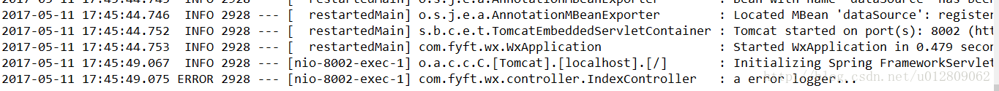

<!DOCTYPE html>
<html>
  <!DOCTYPE html>
<html lang="zh-CN">
<head><meta name="generator" content="Hexo 3.9.0">
  <meta http-equiv="content-type" content="text/html; charset=utf-8">
  <meta http-equiv="X-UA-Compatible" content="IE=Edge,chrome=1">
  
  <title>Spring Boot 热部署与日志配置 - zgshen&#39;s note</title>
  <meta name="viewport" content="width=device-width, initial-scale=1.0, maximum-scale=1.0, user-scalable=0">
  
  <meta name="keywords" content="web框架">
  
  
    <link rel="shortcut icon" type="image/x-icon" href="/favicon.ico?v=1.02">
  
  
    <link rel="alternate" href="/atom.xml " title="zgshen&#39;s note" type="application/atom+xml">
  

  <link rel="stylesheet" href="/css/style.css">
</head></html>
  <body>
    <div class="container">
      <header class="header">
  <div class="blog-title">
    <a href="/" class="logo">zgshen&#39;s note</a>
    <div class="subtitle"></div>
  </div>
  <nav class="navbar">
    <ul class="menu">
      
        <li class="menu-item">
          <a href="/" class="menu-item-link">主页</a>
        </li>
      
        <li class="menu-item">
          <a href="/about" class="menu-item-link">关于</a>
        </li>
      
        <li class="menu-item">
          <a href="https://www.google.com/search?q=site:zguishen.com/" class="menu-item-link">搜索</a>
        </li>
      
    </ul>
  </nav>
</header>
<article class="post">
  <div class="post-title">
    <h1 class="article-title">Spring Boot 热部署与日志配置</h1>
  </div>
   <div class="post-meta">
    <span class="post-time">2017-05-11</span>
  </div>
  <div class="post-content">
    <p>热部署和日志是开发中常用的功能，Srping Boot同样集成了相应的工具，可以方便地实现这些功能。</p>
<h3 id="热部署"><a href="#热部署" class="headerlink" title="热部署"></a>热部署</h3><p>Spring Boot提供了 <code>spring-boot-devtools</code> 模块用于热部署，直接引入就行。<a id="more"></a><br><figure class="highlight xml"><table><tr><td class="gutter"><pre><span class="line">1</span><br><span class="line">2</span><br><span class="line">3</span><br><span class="line">4</span><br><span class="line">5</span><br></pre></td><td class="code"><pre><span class="line"><span class="tag">&lt;<span class="name">dependency</span>&gt;</span></span><br><span class="line">	<span class="tag">&lt;<span class="name">groupId</span>&gt;</span>org.springframework.boot<span class="tag">&lt;/<span class="name">groupId</span>&gt;</span></span><br><span class="line">	<span class="tag">&lt;<span class="name">artifactId</span>&gt;</span>spring-boot-devtools<span class="tag">&lt;/<span class="name">artifactId</span>&gt;</span></span><br><span class="line">	<span class="tag">&lt;<span class="name">optional</span>&gt;</span>true<span class="tag">&lt;/<span class="name">optional</span>&gt;</span></span><br><span class="line"><span class="tag">&lt;/<span class="name">dependency</span>&gt;</span></span><br></pre></td></tr></table></figure></p>
<p>当修改代码重新编译时，工程就会重新启动加载。</p>
<h3 id="日志功能"><a href="#日志功能" class="headerlink" title="日志功能"></a>日志功能</h3><p>当引入 <code>spring-boot-starter-web</code>  时候，Spring Boot已经自动引入 <code>spring-boot-starter-logging</code> ，这里我们使用Logback来实现日志管理。Logback是log4j框架的作者开发的新一代日志框架，它效率更高、能够适应诸多的运行环境，同时天然支持SLF4J。</p>
<p>在spring-boot-starter-xx.RELEASE.jar （xx为版本号）下    <code>org.springframework.boot.logging.logback</code> 包中可看到一个base.xml文件,这是Spring Boot 的logback的默认配置。内容<br><figure class="highlight xml"><table><tr><td class="gutter"><pre><span class="line">1</span><br><span class="line">2</span><br><span class="line">3</span><br><span class="line">4</span><br><span class="line">5</span><br><span class="line">6</span><br><span class="line">7</span><br><span class="line">8</span><br><span class="line">9</span><br><span class="line">10</span><br><span class="line">11</span><br><span class="line">12</span><br><span class="line">13</span><br><span class="line">14</span><br><span class="line">15</span><br><span class="line">16</span><br></pre></td><td class="code"><pre><span class="line"><span class="meta">&lt;?xml version="1.0" encoding="UTF-8"?&gt;</span></span><br><span class="line"></span><br><span class="line"><span class="comment">&lt;!--</span></span><br><span class="line"><span class="comment">Base logback configuration provided for compatibility with Spring Boot 1.1</span></span><br><span class="line"><span class="comment">--&gt;</span></span><br><span class="line"></span><br><span class="line"><span class="tag">&lt;<span class="name">included</span>&gt;</span></span><br><span class="line">	<span class="tag">&lt;<span class="name">include</span> <span class="attr">resource</span>=<span class="string">"org/springframework/boot/logging/logback/defaults.xml"</span> /&gt;</span></span><br><span class="line">	<span class="tag">&lt;<span class="name">property</span> <span class="attr">name</span>=<span class="string">"LOG_FILE"</span> <span class="attr">value</span>=<span class="string">"$&#123;LOG_FILE:-$&#123;LOG_PATH:-$&#123;LOG_TEMP:-$&#123;java.io.tmpdir:-/tmp&#125;&#125;&#125;/spring.log&#125;"</span>/&gt;</span></span><br><span class="line">	<span class="tag">&lt;<span class="name">include</span> <span class="attr">resource</span>=<span class="string">"org/springframework/boot/logging/logback/console-appender.xml"</span> /&gt;</span></span><br><span class="line">	<span class="tag">&lt;<span class="name">include</span> <span class="attr">resource</span>=<span class="string">"org/springframework/boot/logging/logback/file-appender.xml"</span> /&gt;</span></span><br><span class="line">	<span class="tag">&lt;<span class="name">root</span> <span class="attr">level</span>=<span class="string">"INFO"</span>&gt;</span></span><br><span class="line">		<span class="tag">&lt;<span class="name">appender-ref</span> <span class="attr">ref</span>=<span class="string">"CONSOLE"</span> /&gt;</span></span><br><span class="line">		<span class="tag">&lt;<span class="name">appender-ref</span> <span class="attr">ref</span>=<span class="string">"FILE"</span> /&gt;</span></span><br><span class="line">	<span class="tag">&lt;/<span class="name">root</span>&gt;</span></span><br><span class="line"><span class="tag">&lt;/<span class="name">included</span>&gt;</span></span><br></pre></td></tr></table></figure></p>
<p>可以看到日志的输出级别是INFO，输出到文件需要我们东东配置下路径。在application.properties进行配置如下<br><figure class="highlight xml"><table><tr><td class="gutter"><pre><span class="line">1</span><br><span class="line">2</span><br><span class="line">3</span><br></pre></td><td class="code"><pre><span class="line">#日志配置</span><br><span class="line">logging.file=test.log</span><br><span class="line">logging.level.com.fyft.wx.controller=warn</span><br></pre></td></tr></table></figure></p>
<p>运行会在工程根目录看到生成的日志文件，把<code>com.fyft.wx.controller</code> 包的日志级别设置为warn了<br>controller下写个测试类<br><figure class="highlight java"><table><tr><td class="gutter"><pre><span class="line">1</span><br><span class="line">2</span><br><span class="line">3</span><br><span class="line">4</span><br><span class="line">5</span><br><span class="line">6</span><br><span class="line">7</span><br><span class="line">8</span><br><span class="line">9</span><br><span class="line">10</span><br><span class="line">11</span><br><span class="line">12</span><br><span class="line">13</span><br><span class="line">14</span><br><span class="line">15</span><br><span class="line">16</span><br><span class="line">17</span><br><span class="line">18</span><br></pre></td><td class="code"><pre><span class="line"><span class="keyword">package</span> com.fyft.wx.controller;</span><br><span class="line"><span class="keyword">import</span> org.slf4j.Logger;</span><br><span class="line"><span class="keyword">import</span> org.slf4j.LoggerFactory;</span><br><span class="line"><span class="keyword">import</span> org.springframework.web.bind.annotation.RequestMapping;</span><br><span class="line"><span class="keyword">import</span> org.springframework.web.bind.annotation.RestController;</span><br><span class="line"></span><br><span class="line"><span class="meta">@RestController</span></span><br><span class="line"><span class="keyword">public</span> <span class="class"><span class="keyword">class</span> <span class="title">IndexController</span> </span>&#123;</span><br><span class="line">	</span><br><span class="line">	<span class="keyword">private</span> <span class="keyword">final</span> <span class="keyword">static</span> Logger LOG = LoggerFactory.getLogger(IndexController<span class="class">.<span class="keyword">class</span>)</span>;</span><br><span class="line">	</span><br><span class="line">	<span class="meta">@RequestMapping</span>(<span class="string">"test"</span>)</span><br><span class="line">	<span class="function"><span class="keyword">public</span> String <span class="title">name</span><span class="params">()</span> </span>&#123;</span><br><span class="line">		LOG.info(<span class="string">"a info logger..."</span>);</span><br><span class="line">		LOG.error(<span class="string">"a error logger..."</span>);</span><br><span class="line">		<span class="keyword">return</span> <span class="string">"welcome to the FYFT index page.I'm shen."</span>;</span><br><span class="line">	&#125;</span><br><span class="line">&#125;</span><br></pre></td></tr></table></figure></p>
<p>访问本controller，输出（日志级别ALL &lt; DEBUG &lt; INFO &lt; WARN &lt; ERROR &lt; FATAL &lt; OFF，所以只输出error的）<br></p>
<p>如果我们需要更复杂的日志功能，可以自己写一个xml文件来配置，比如输出到控制台使用Spring Boot的默认配置，而输出到文件使用自定义配置。<br>在resources下新建一个logback.xml配置文件并把刚才logging.file的配置删掉，配置如下<br><figure class="highlight xml"><table><tr><td class="gutter"><pre><span class="line">1</span><br><span class="line">2</span><br><span class="line">3</span><br><span class="line">4</span><br><span class="line">5</span><br><span class="line">6</span><br><span class="line">7</span><br><span class="line">8</span><br><span class="line">9</span><br><span class="line">10</span><br><span class="line">11</span><br><span class="line">12</span><br><span class="line">13</span><br><span class="line">14</span><br><span class="line">15</span><br><span class="line">16</span><br><span class="line">17</span><br><span class="line">18</span><br><span class="line">19</span><br><span class="line">20</span><br><span class="line">21</span><br><span class="line">22</span><br><span class="line">23</span><br><span class="line">24</span><br><span class="line">25</span><br><span class="line">26</span><br><span class="line">27</span><br><span class="line">28</span><br><span class="line">29</span><br><span class="line">30</span><br><span class="line">31</span><br><span class="line">32</span><br><span class="line">33</span><br><span class="line">34</span><br></pre></td><td class="code"><pre><span class="line"><span class="meta">&lt;?xml version="1.0" encoding="UTF-8"?&gt;</span></span><br><span class="line"><span class="tag">&lt;<span class="name">configuration</span>&gt;</span></span><br><span class="line">	<span class="comment">&lt;!-- 继承默认配置 --&gt;</span></span><br><span class="line">	<span class="tag">&lt;<span class="name">include</span> <span class="attr">resource</span>=<span class="string">"org/springframework/boot/logging/logback/base.xml"</span>/&gt;</span></span><br><span class="line">	<span class="tag">&lt;<span class="name">logger</span> <span class="attr">name</span>=<span class="string">"org.springframework.web"</span> <span class="attr">level</span>=<span class="string">"WARN"</span>/&gt;</span></span><br><span class="line">	</span><br><span class="line">	<span class="comment">&lt;!-- 日志存储路径 --&gt;</span></span><br><span class="line">	<span class="tag">&lt;<span class="name">property</span> <span class="attr">name</span>=<span class="string">"LOG_HOME"</span> <span class="attr">value</span>=<span class="string">"D:\\logs"</span> /&gt;</span></span><br><span class="line">	</span><br><span class="line">	<span class="comment">&lt;!-- 文件输出配置 --&gt;</span></span><br><span class="line">	<span class="tag">&lt;<span class="name">appender</span> <span class="attr">name</span>=<span class="string">"FILE"</span> <span class="attr">class</span>=<span class="string">"ch.qos.logback.core.rolling.RollingFileAppender"</span>&gt;</span></span><br><span class="line">	    <span class="tag">&lt;<span class="name">File</span>&gt;</span>$&#123;LOG_HOME&#125;\\fyft-wx.log<span class="tag">&lt;/<span class="name">File</span>&gt;</span></span><br><span class="line">	    <span class="tag">&lt;<span class="name">rollingPolicy</span> <span class="attr">class</span>=<span class="string">"ch.qos.logback.core.rolling.TimeBasedRollingPolicy"</span>&gt;</span></span><br><span class="line">	        <span class="comment">&lt;!-- daily rollover 保存历史记录到这个文件夹一日起为后缀 --&gt;</span></span><br><span class="line">		    <span class="tag">&lt;<span class="name">FileNamePattern</span>&gt;</span>$&#123;LOG_HOME&#125;\\temp\\fyft-wx.%d&#123;yyyy-MM-dd&#125;.%i.log<span class="tag">&lt;/<span class="name">FileNamePattern</span>&gt;</span></span><br><span class="line">		    <span class="comment">&lt;!-- keep 30 days' worth of history 保存天数--&gt;</span></span><br><span class="line">		    <span class="tag">&lt;<span class="name">maxHistory</span>&gt;</span>30<span class="tag">&lt;/<span class="name">maxHistory</span>&gt;</span></span><br><span class="line">		    <span class="comment">&lt;!-- 日志大小 --&gt;</span></span><br><span class="line">		    <span class="tag">&lt;<span class="name">timeBasedFileNamingAndTriggeringPolicy</span> <span class="attr">class</span>=<span class="string">"ch.qos.logback.core.rolling.SizeAndTimeBasedFNATP"</span>&gt;</span></span><br><span class="line">                <span class="tag">&lt;<span class="name">maxFileSize</span>&gt;</span>2MB<span class="tag">&lt;/<span class="name">maxFileSize</span>&gt;</span></span><br><span class="line">            <span class="tag">&lt;/<span class="name">timeBasedFileNamingAndTriggeringPolicy</span>&gt;</span></span><br><span class="line">		<span class="tag">&lt;/<span class="name">rollingPolicy</span>&gt;</span></span><br><span class="line">		<span class="tag">&lt;<span class="name">encoder</span>&gt;</span></span><br><span class="line">			<span class="comment">&lt;!--格式化输出：%d表示日期，%thread表示线程名，%-5level：级别从左显示5个字符宽度%msg：日志消息，%n是换行符--&gt;</span></span><br><span class="line">		    <span class="tag">&lt;<span class="name">Pattern</span>&gt;</span>%d&#123;yyyy-MM-dd HH:mm:ss.SSS&#125; [%thread] %-5level %logger&#123;35&#125; - %msg %n<span class="tag">&lt;/<span class="name">Pattern</span>&gt;</span></span><br><span class="line">		    <span class="tag">&lt;<span class="name">charset</span>&gt;</span>UTF-8<span class="tag">&lt;/<span class="name">charset</span>&gt;</span> <span class="comment">&lt;!-- 此处设置字符集 --&gt;</span></span><br><span class="line">	    <span class="tag">&lt;/<span class="name">encoder</span>&gt;</span></span><br><span class="line">	<span class="tag">&lt;/<span class="name">appender</span>&gt;</span></span><br><span class="line"></span><br><span class="line">	<span class="comment">&lt;!-- root节点，配置日志级别，添加输出节点 --&gt;</span></span><br><span class="line">	<span class="tag">&lt;<span class="name">root</span> <span class="attr">level</span>=<span class="string">"INFO"</span>&gt;</span></span><br><span class="line">	    <span class="tag">&lt;<span class="name">appender-ref</span> <span class="attr">ref</span>=<span class="string">"FILE"</span>&gt;</span><span class="tag">&lt;/<span class="name">appender-ref</span>&gt;</span></span><br><span class="line">	<span class="tag">&lt;/<span class="name">root</span>&gt;</span></span><br><span class="line"><span class="tag">&lt;/<span class="name">configuration</span>&gt;</span></span><br></pre></td></tr></table></figure></p>
<p>如果输出到控制台的日志也需要自定义，就再加上一个 appender 配置，并添加到root节点。需要注意的是继承自 Spring Bootd 配置需要去掉，不然控制台的日志会输出两次（logger输出一次，root输出一次）</p>
<figure class="highlight xml"><table><tr><td class="gutter"><pre><span class="line">1</span><br><span class="line">2</span><br><span class="line">3</span><br><span class="line">4</span><br><span class="line">5</span><br><span class="line">6</span><br><span class="line">7</span><br><span class="line">8</span><br><span class="line">9</span><br><span class="line">10</span><br><span class="line">11</span><br><span class="line">12</span><br><span class="line">13</span><br><span class="line">14</span><br><span class="line">15</span><br><span class="line">16</span><br><span class="line">17</span><br><span class="line">18</span><br><span class="line">19</span><br><span class="line">20</span><br><span class="line">21</span><br><span class="line">22</span><br><span class="line">23</span><br><span class="line">24</span><br><span class="line">25</span><br><span class="line">26</span><br><span class="line">27</span><br><span class="line">28</span><br><span class="line">29</span><br><span class="line">30</span><br><span class="line">31</span><br><span class="line">32</span><br><span class="line">33</span><br><span class="line">34</span><br><span class="line">35</span><br><span class="line">36</span><br><span class="line">37</span><br><span class="line">38</span><br><span class="line">39</span><br><span class="line">40</span><br><span class="line">41</span><br><span class="line">42</span><br><span class="line">43</span><br><span class="line">44</span><br></pre></td><td class="code"><pre><span class="line"><span class="meta">&lt;?xml version="1.0" encoding="UTF-8"?&gt;</span></span><br><span class="line"><span class="tag">&lt;<span class="name">configuration</span>&gt;</span>  </span><br><span class="line">	<span class="comment">&lt;!-- 去掉继承的配置 --&gt;</span></span><br><span class="line">	<span class="comment">&lt;!-- &lt;include resource="org/springframework/boot/logging/logback/base.xml"/&gt;</span></span><br><span class="line"><span class="comment">	&lt;logger name="org.springframework.web" level="WARN"/&gt; --&gt;</span></span><br><span class="line">	</span><br><span class="line">	<span class="comment">&lt;!-- 日志存储路径 --&gt;</span></span><br><span class="line">	<span class="tag">&lt;<span class="name">property</span> <span class="attr">name</span>=<span class="string">"LOG_HOME"</span> <span class="attr">value</span>=<span class="string">"D:\\logs"</span> /&gt;</span></span><br><span class="line">	</span><br><span class="line">	<span class="comment">&lt;!-- 文件输出配置 --&gt;</span></span><br><span class="line">	<span class="tag">&lt;<span class="name">appender</span> <span class="attr">name</span>=<span class="string">"FILE"</span> <span class="attr">class</span>=<span class="string">"ch.qos.logback.core.rolling.RollingFileAppender"</span>&gt;</span></span><br><span class="line">	    <span class="tag">&lt;<span class="name">File</span>&gt;</span>$&#123;LOG_HOME&#125;\\fyft-wx.log<span class="tag">&lt;/<span class="name">File</span>&gt;</span></span><br><span class="line">	    <span class="tag">&lt;<span class="name">rollingPolicy</span> <span class="attr">class</span>=<span class="string">"ch.qos.logback.core.rolling.TimeBasedRollingPolicy"</span>&gt;</span></span><br><span class="line">	        <span class="comment">&lt;!-- daily rollover 保存历史记录到这个文件夹一日起为后缀 --&gt;</span></span><br><span class="line">		    <span class="tag">&lt;<span class="name">FileNamePattern</span>&gt;</span>$&#123;LOG_HOME&#125;\\temp\\fyft-wx.%d&#123;yyyy-MM-dd&#125;.%i.log<span class="tag">&lt;/<span class="name">FileNamePattern</span>&gt;</span></span><br><span class="line">		    <span class="comment">&lt;!-- keep 30 days' worth of history 保存天数--&gt;</span></span><br><span class="line">		    <span class="tag">&lt;<span class="name">maxHistory</span>&gt;</span>30<span class="tag">&lt;/<span class="name">maxHistory</span>&gt;</span></span><br><span class="line">		    <span class="comment">&lt;!-- 日志大小 --&gt;</span></span><br><span class="line">		    <span class="tag">&lt;<span class="name">timeBasedFileNamingAndTriggeringPolicy</span> <span class="attr">class</span>=<span class="string">"ch.qos.logback.core.rolling.SizeAndTimeBasedFNATP"</span>&gt;</span></span><br><span class="line">                <span class="tag">&lt;<span class="name">maxFileSize</span>&gt;</span>2MB<span class="tag">&lt;/<span class="name">maxFileSize</span>&gt;</span></span><br><span class="line">            <span class="tag">&lt;/<span class="name">timeBasedFileNamingAndTriggeringPolicy</span>&gt;</span></span><br><span class="line">		<span class="tag">&lt;/<span class="name">rollingPolicy</span>&gt;</span></span><br><span class="line">		<span class="tag">&lt;<span class="name">encoder</span>&gt;</span></span><br><span class="line">			<span class="comment">&lt;!--格式化输出：%d表示日期，%thread表示线程名，%-5level：级别从左显示5个字符宽度%msg：日志消息，%n是换行符--&gt;</span></span><br><span class="line">		    <span class="tag">&lt;<span class="name">Pattern</span>&gt;</span>%d&#123;yyyy-MM-dd HH:mm:ss.SSS&#125; [%thread] %-5level %logger&#123;35&#125; - %msg %n<span class="tag">&lt;/<span class="name">Pattern</span>&gt;</span></span><br><span class="line">		    <span class="tag">&lt;<span class="name">charset</span>&gt;</span>UTF-8<span class="tag">&lt;/<span class="name">charset</span>&gt;</span> <span class="comment">&lt;!-- 此处设置字符集 --&gt;</span></span><br><span class="line">	    <span class="tag">&lt;/<span class="name">encoder</span>&gt;</span></span><br><span class="line">	<span class="tag">&lt;/<span class="name">appender</span>&gt;</span></span><br><span class="line">	</span><br><span class="line">	<span class="comment">&lt;!-- 控制台输出配置 --&gt;</span>   </span><br><span class="line">    <span class="tag">&lt;<span class="name">appender</span> <span class="attr">name</span>=<span class="string">"STDOUT"</span> <span class="attr">class</span>=<span class="string">"ch.qos.logback.core.ConsoleAppender"</span>&gt;</span></span><br><span class="line">        <span class="tag">&lt;<span class="name">encoder</span> <span class="attr">class</span>=<span class="string">"ch.qos.logback.classic.encoder.PatternLayoutEncoder"</span>&gt;</span> </span><br><span class="line">            <span class="comment">&lt;!--格式化输出：%d表示日期，$&#123;PID&#125; 进程Id， %thread表示线程名，%-5level：级别从左显示5个字符宽度%msg：日志消息，%n是换行符--&gt;</span> </span><br><span class="line">            <span class="tag">&lt;<span class="name">Pattern</span>&gt;</span>%d&#123;yyyy-MM-dd HH:mm:ss.SSS&#125; $&#123;PID&#125; [%thread] %-5level %logger&#123;35&#125; - %msg %n<span class="tag">&lt;/<span class="name">Pattern</span>&gt;</span></span><br><span class="line">            <span class="tag">&lt;<span class="name">charset</span>&gt;</span>UTF-8<span class="tag">&lt;/<span class="name">charset</span>&gt;</span> <span class="comment">&lt;!-- 此处设置字符集 --&gt;</span></span><br><span class="line">        <span class="tag">&lt;/<span class="name">encoder</span>&gt;</span> </span><br><span class="line">    <span class="tag">&lt;/<span class="name">appender</span>&gt;</span></span><br><span class="line">	</span><br><span class="line">	<span class="comment">&lt;!-- root节点，配置日志级别，添加输出节点 --&gt;</span></span><br><span class="line">	<span class="tag">&lt;<span class="name">root</span> <span class="attr">level</span>=<span class="string">"INFO"</span>&gt;</span></span><br><span class="line">	    <span class="tag">&lt;<span class="name">appender-ref</span> <span class="attr">ref</span>=<span class="string">"FILE"</span>&gt;</span><span class="tag">&lt;/<span class="name">appender-ref</span>&gt;</span></span><br><span class="line">	    <span class="tag">&lt;<span class="name">appender-ref</span> <span class="attr">ref</span>=<span class="string">"STDOUT"</span>&gt;</span><span class="tag">&lt;/<span class="name">appender-ref</span>&gt;</span></span><br><span class="line">	<span class="tag">&lt;/<span class="name">root</span>&gt;</span></span><br><span class="line"><span class="tag">&lt;/<span class="name">configuration</span>&gt;</span></span><br></pre></td></tr></table></figure>
<p>其他更多详细的logback配置可查看官方文档 <a href="https://logback.qos.ch/manual/configuration.html" target="_blank" rel="noopener">https://logback.qos.ch/manual/configuration.html</a></p>

  </div>
  <div class="post-footer">
    
      <ul class="post-tag-list"><li class="post-tag-list-item"><a class="post-tag-list-link" href="/tags/web框架/">web框架</a></li></ul>
    

    <a href="#top" class="top">返回顶部</a>
  </div>
</article>
<footer>
  &copy; 2021
  <span class="author">
    zguishen
  </span>
</footer>
    </div>
	<script async src="https://www.googletagmanager.com/gtag/js?id=GA_MEASUREMENT_ID"></script>
	<script>
	  window.dataLayer = window.dataLayer || [];
	  function gtag(){dataLayer.push(arguments);}
	  gtag('js', new Date());
	  gtag('config', 'UA-106347761-1');
	</script>
  </body>
</html>